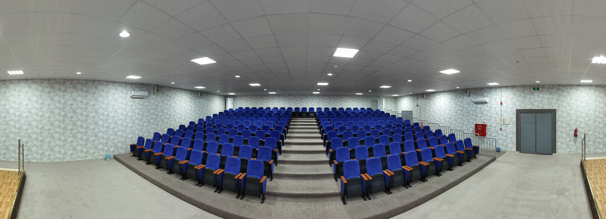

يحدّد أي الصفوف والمقاعد تُستخدم في حجز الخريجين و حجز الضيوف. احفظ ثم طبّق مقاعد الضيوف أدناه إن لزم.
ثلاث خطوات منفصلة: (1) معايير الصفوف → «حفظ المعايير» · (2) قوائم المقاعد هنا → «حفظ المقاعد» · (3) موقع كل مقعد على الصورة أدناه → «حفظ لهذا المقعد». النقاط الخضراء = معايرة محفوظة؛ «غير معاير» = موضع تقريبي من النموذج حتى تحفظه.
خريجون: اختر مقاعد الناحية اليسار فقط.
جاري التحميل…
استورد Excel (العمود الأول: الهوية، الثاني: الاسم) أو
أضِف صفوفاً يدوياً. الأسماء تُحفظ في Supabase داخل جدول
threa_student_roster — صف واحد id = default
وعمود entries (JSON)، وليس صفاً لكل طالب. لضيوف بلا هوية
استخدم GUEST-XXXXXXXX في عمود الرقم.
| رقم الهوية | الاسم الكامل |
|---|
انقر داخل الصورة لوضع أو نقل العلامة الحمراء، ثم «حفظ لهذا المقعد» من اللوحة اليمنى. النقاط الخضراء = معايرة محفوظة سابقاً.
